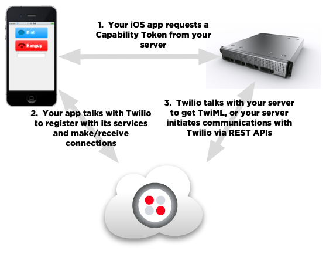
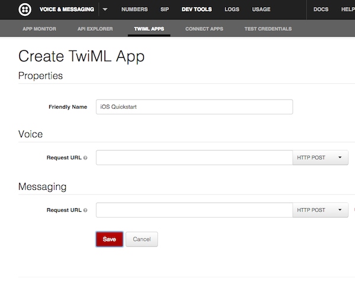
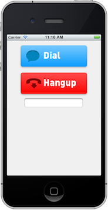

Twilio Client iOS Quickstart
Overview
You want your iPad/iPhone/iPod Touch app to make and receive calls? There's an SDK for that!
Twilio Client for iOS is an Objective-C library that enables voice communications with landlines or other Twilio Client devices, including web browsers and other mobile devices.
Architecture
There are three major pieces in a Twilio Client app:
- Your iOS app that uses the
libTwilioClient.alibrary to add Voice over IP features to your application. - A server-side application to grant a capability token to your Client app, and to orchestrate Twilio's telephony services using TwiML and Twilio's REST API. You'll use a TwiML Application to connect your iOS app to Twilio's cloud.
- Twilio's cloud services to connect your app to conference calls, IVR applications, and make calls to PSTN and SIP devices.

We'll walk you through each of these pieces in detail below. Let's get started.
Quickstart Tutorial
In this tutorial, we'll use the Twilio Client iOS and TwiML APIs to demonstrate how to make an outgoing call, receive an incoming call, and make calls between two Twilio Client instances.
This guide assumes you have familiarity with iOS and Objective-C concepts like View-Controllers, delegates, properties, and Objective-C object life cycle and memory management.
Prerequisites
- Install Xcode 6 with at least iOS SDK 8 or higher. Xcode may be obtained from the Mac App Store.
- Get set up as a registered iOS developer with valid Provisioning Profile(s) for any devices you will be testing with. For more information on provisioning devices, please refer to Apple's documentation Maintaining Identifiers, Devices, and Profiles.
- Get a Twilio Account SID and Auth Token to initiate calls from your iOS device. You will find these in your Account Dashboard. If you don't have an account, you can always sign up for a free trial account.
- In the example below, we'll setup a web server on the public Internet to host the server-side code for generating capability tokens and TwiML. The Quickstart below provides a sample python app deployed to Heroku for this purpose, but you can use whatever method for deploying a web server you like.
Let's get some of the server-side dependencies out of the way first.
Configure a Placeholder TwiML Application
Visit TwiML Apps in the Twilio Account Portal and click 'Create TwiML App'. Enter 'iOS Quickstart' as the app's Friendly Name and click 'Save'. Don't worry about the Voice and Messaging URLs yet–we'll fill them in shortly.
Once the application is saved, make note of its ApplicationSid (a long string like "APa4983020a0b29fb5db1b1dc68e322fbe"). We'll need this in the upcoming steps.

Setup the back-end Application Server
Next, we'll deploy a server to perform two functions:
- Provide capability tokens to our iOS client application.
- Serve up our TwiML application and/or make REST API calls to orchestrate Twilio's telephony services.
Quick Tour of the Application
The code for the Quickstart Tutorial server-side application can be found in the Server/ folder inside the SDK tarball. Feel free to open up server.py and take a look. The app uses Python's Flask framework and exposes three endpoints:
/generates TwiML to tell Twilio to play "Welcome to Twilio" whenever you place a call./callgenerates TwiML to route calls to/from the PSTN and your iOS application./tokenreturns a capability token to your iOS application.
Deploying the Server
Now we need to make this application available via the public Internet. You can do this with either of the following methods, or another approach to deploy a web server you're comfortable with.
Option 1: Use Heroku
The easiest way to deploy the application is Heroku. To do this, do the following:
- Visit the Twilio Mobile Quickstart repository on Github and click the "Deploy to Heroku" button. If you don't have a Heroku account, you'll be led through the process to set one up.
- Once you've signed into Heroku, you'll be taken to a form to deploy the Quickstart application.
- Enter your Twilio Account Sid and your Twilio Auth Token as the ACCOUNT_SID and AUTH_TOKEN values, respectively.
- Enter the TwiML App Sid you created above as the value for APP_SID.
- Enter any caller ID that you've verified with your Twilio account in the CALLER_ID field.
- Click Create your application.
- Once Heroku finishes, open up a second tab and return to the configuration screen for your TwiML app. Enter your Heroku application's URL as the voice url for your application and save the change.
Option 2: Run Locally Using ngrok
With this method, you'll run Flask on your local box and create a
publicly-addressable tunnel to it using ngrok.
- Open server.py and modify
ACCOUNT_SIDandAUTH_TOKENto match the values from your Twilio account. - Modify
APP_SIDto match the App Sid you created above. - Modify
CALLER_IDto any caller ID that you've verified with your Twilio account. - Install all the required python dependencies by running
pip install -r requirements.txtfrom theServer/folder at the command line. - Download and install ngrok and setup a free ngrok account.
- Run
python server.pyto start the server. - Run
ngrok 5000to open up a tunnel from the public Internet to your server. - Return to the configuration screen for your TwiML app and enter your ngrok application's URL as the voice URL for your application and save the change.
Testing your Server
To make sure your server deployed successfully, open a web browser and enter http://{your heroku app or ngrok address}/ and view source on the resulting page. If everything is working, you'll see some XML that looks like this:
<?xml version="1.0" encoding="UTF-8"?>
<Response>
<Say>Welcome to Twilio</Say>
</Response>
This is a simple TwiML application that will play an announcement whenever you make a call from your iOS application.
Now that we have the server-side dependencies setup, let's get started on our iOS app. You can test the examples below in the iOS Simulator or on your device.
The Xcode Project
Please open HelloMonkey.xcodeproj Xcode project in Quickstart folder.
This project is based on "View-based Application" template for
iPhone that has already been configured to work with Twilio Client
library. Please see Frequently Asked Questions for details on
modifying an Xcode project to use Twilio Client.
The HelloMonkey app is very simple, presenting "Dial" and "Hangup"
buttons, and a text field for who the app should call. The user
interface elements have already been wired up to the
HelloMonkeyViewController class in Interface Builder.
In this step, you'll fill in the code to give the app its behavior, learning how to use the Twilio Client iOS SDK in the process.
Creating a Device
The primary class for connecting to Twilio services from your app is
TCDevice. This class represents a soft "device" that knows how to speak to Twilio services, coordinates service authorization with Twilio,
listens for incoming connections, and establishes outgoing connections.
An instance of this class is created using a "capability token",
described in the next section.
You'll use a TCDevice to initiate outgoing calls and listen for incoming calls.
Let's create an instance and wire it up!
Add a member variable of type TCDevice to HelloMonkeyViewController.m like so:
HelloMonkeyViewController.m
#import "HelloMonkeyViewController.h"
#import "TwilioClient.h"
@interface HelloMonkeyViewController()
{
TCDevice* _phone;
TCConnection* _connection;
}
@end
To initialize a device, you'll change the URL to point to your server's
/token URL and pass the resulting string to
-initWithCapabilityToken:delegate:.
Note: Make sure you swap in your back-end server's /token URL for the sample URL in HelloMonkeyViewController's viewDidLoad method.
HelloMonkeyViewController.m
- (void)viewDidLoad
{
NSURL *url = [NSURL URLWithString:@"http://companyfoo.com/token"];
NSError *error = nil;
NSString *token = [NSString stringWithContentsOfURL:url encoding:NSUTF8StringEncoding error:&error];
if (token == nil) {
NSLog(@"Error retrieving token: %@", [error localizedDescription]);
} else {
_phone = [[TCDevice alloc] initWithCapabilityToken:token delegate:nil];
}
}
Making an HTTP request to the /token endpoint returns a
capability token–a string that, when given to a TCDevice in your iOS app,
grants it capabilities such as making outgoing calls or allowing incoming calls.
Capability tokens are an important part of Twilio Client, so let's take a moment to explain them. You use capability tokens to sign communications from your iOS app to Twilio. In a production application, these tokens are created by you on your server and allow you to specify what capabilities are going to be available to your app, such as whether it can receive incoming connections, make outgoing connections, etc.
For the security of your Twilio account, you should not embed a Capability Token or your Twilio Account's Auth Token in the app you submit to the App Store.
You can read more about capability tokens and their best practices here.
Tokens always have an expiration, which means all tokens have a limited lifetime to protect you from abuse. The token generated here is valid for one hour unless otherwise specified. To specify a different period of time, pass in the number of seconds as the expires parameter to TwilioCapability.generate() – for example, for a token that expires after 5 minutes, call TwilioCapability.generate(expires = 300). The maximum allowed lifetime for a token is 24 hours.
Now, back to coding! If you compile and run this code, you should see the following:

Now, we've got an app that can create outgoing connections and receive incoming connections.
For the time being, we'll focus on making an outgoing connection. The connection will call a Twilio sample application that responds with a friendly greeting.
Dialing out
Let's add a method to HelloMonkeyViewController to initiate a connection. To make a connection, we call the TCDevice's
-connect:(NSDictionary*)params delegate:(id<TCConnectionDelegate>)delegate
method. Just pass in nil parameters and a nil delegate for the moment;
we'll do more with these arguments later.
HelloMonkeyViewController.m
- (IBAction)dialButtonPressed:(id)sender
{
_connection = [_phone connect:nil delegate:nil];
}
Connections to Twilio, either incoming or outgoing, are represented by
instances of the class TCConnection. In addition, status callbacks are provided to objects that implement the delegate protocols TCDeviceDelegate and TCConnectionDelegate.
If you now compile the app and run it, you should be able to click the "Dial" button and hear the greeting. Awesome!
Wouldn't it be nice if you could also hang up on a connection if you don't want to hear the whole thing? Let's go do that now.
Hanging up from your iOS Device
Congratulations on making your first audio connection from your iOS device to Twilio!
You should have heard a welcome message but as you probably noticed, you had no way to close the connection as the Hangup button doesn't do anything. So, let's add some functionality to do that.
Let us just add code in HelloMonkeyViewController to hangup ongoing connection.
HelloMonkeyViewController.m
- (IBAction)hangupButtonPressed:(id)sender
{
[_connection disconnect];
}
That's everything! Go ahead and make another call. You can now press the hangup button at any time and your connection will close.
Connecting to a TwiML Application
Wondering what actually happens when you connect using your app, and why you keep hearing that same welcome message? The key to this mystery is in the Python server we deployed earlier. Let's take a look at that code:
server.py
APP_SID = 'YOUR APP SID HERE'
# some code ommitted here
@app.route('/token')
def token():
account_sid = os.environ.get("ACCOUNT_SID", ACCOUNT_SID)
auth_token = os.environ.get("AUTH_TOKEN", AUTH_TOKEN)
app_sid = os.environ.get("APP_SID", APP_SID)
capability = TwilioCapability(account_sid, auth_token)
# This allows outgoing connections to TwiML application
if request.values.get('allowOutgoing') != 'false':
capability.allow_client_outgoing(app_sid)
# This allows incoming connections to client (if specified)
client = request.values.get('client')
if client != None:
capability.allow_client_incoming(client)
# This returns a token to use with Twilio based on the account and capabilities defined above
return capability.generate()
This portion of the code is responsible for creating a capability token that tells your Twilio Device what actions it is allowed to perform.
The two lines below tell your device to make outgoing connections to the App Sid APa4983020a0b29fb5db1b1dc68e322fbe.
APP_SID = 'APa4983020a0b29fb5db1b1dc68e322fbe' # ... some code omitted here ... capability.allow_client_outgoing(app_sid)
Applications are just references to TwiML URLs that are fetched when a connection is established from a device, a browser, or a phone. If you are not familiar with TwiML, we suggest you head over to Twilio Markup Language Quickstart.
The string starting with 'AP' is an Application SID. You entered this Application Sid when you deployed the server in the steps above. That Application's Voice URL points to your server's / endpoint, which returns the TwiML to say "Welcome to Twilio".
<?xml version="1.0" encoding="UTF-8"?>
<Response>
<Say>Welcome to Twilio</Say>
</Response>
We change the user's telephony experience by generating different TwiML. Let's continue with an example that let's us dial any phone number.
Passing Parameters to your Application to Make a VoIP Call
Now, let's make a Twilio Application that can actually do something useful by passing data from your iOS app to your TwiML script. Let's dial out to an arbitrary phone number. It'll be easy, all we need to do is:
- Grab a phone number from a text field.
- Pass that phone number along to
TCDevice's-(void)connect:(NSDictionary*)parameters delegate: (id<TCDeviceDelegate>)delegatemethod. - Update your TwiML Application to point to the back-end endpoint that receives this input and dials the number entered by the user.
Let's go do it!
The text field in the app is wired up to the property numberField in
HelloMonkeyViewController. We'll now add some code to pass this through
to your script when creating the connection.
In HelloMonkeyViewController.m, create a NSDictionary* with an object
containing key To and value of the text field. Pass this dictionary to the
connect method.
HelloMonkeyViewController.m
- (IBAction)dialButtonPressed:(id)sender
{
NSDictionary *params = @{@"To": self.numberField.text};
_connection = [_phone connect:params delegate:nil];
}
Now, let's change our TwiML Application to point to our app's /call endpoint. Go to the TwiML apps page in the account portal, change your application's Voice URL to point to your server's /call endpoint: http://{your server url}/call, and save your changes.
Now, go ahead and compile your app for the iOS Simulator. Run it, enter another phone number in the box and hit dial. Your phone will ring and you can talk to yourself! Huzzah!
Here's how it works. When your application connects to Twilio, your TwiML App's Voice URL points to the /call endpoint on your python server, which runs the following code:
server.py
@app.route('/call', methods=['GET', 'POST'])
def call():
resp = twilio.twiml.Response()
from_value = request.values.get('From')
to = request.values.get('To')
if not (from_value and to):
return str(resp.say("Invalid request"))
from_client = from_value.startswith('client')
caller_id = os.environ.get("CALLER_ID", CALLER_ID)
if not from_client:
# PSTN -> client
resp.dial(callerId=from_value).client(CLIENT)
elif to.startswith("client:"):
# client -> client
resp.dial(callerId=from_value).client(to[7:])
else:
# client -> PSTN
resp.dial(to, callerId=caller_id)
return str(resp)
This code looks at the From parameter in the request from Twilio. If the connection is coming from your iOS application, it grabs the To parameter passed by your application and dials the number.
Things work a bit differently if the call is coming from a PSTN phone number. Let's dig into that now: Now, it's time to get your app ringing.
Receiving Incoming Calls
Now, that we know how to initiate connections from your app, it's time for your app to start receiving incoming connections! By the end of this tutorial, you will be able to call in to your device using the iOS Simulator (or vice-versa). Hold on tight…
To receive incoming connections, we'll do the following things:
- Give the app client a name and "register" it with Twilio.
- Add callbacks to notify your app of incoming connections via delegate methods.
Change your code to pass a client name to your application server when
it starts up. (In a real app, you would pass a username/password
combination from UITextFields, but we'll omit this for simplicity.)
TCDevice announces important events to an object that implements the
TCDeviceDelegate protocol:
-(void)deviceDidStartListeningForIncomingConnections:(TCDevice*)device:
callback for when the device is successfully registered with Twilio.
-(void)device:(TCDevice*)device didStopListeningForIncomingConnections:(NSError*)error:
callback for when the device is no longer listening for incoming
connections due to error or a call to -[TCDevice unlisten].
-(void)device:(TCDevice*)device didReceiveIncomingConnection:(TCConnection*)connection:
callback for when a client receives an incoming connection
Please register the instance of HelloMonkeyViewController to be
TCDevice's delegate during (id)viewDidLoad:
HelloMonkeyViewController.m
@interface HelloMonkeyViewController() <TCDeviceDelegate>
{
TCDevice* _phone;
TCConnection* _connection;
}
@end
@implementation HelloMonkeyViewController
- (void)viewDidLoad
{
NSURL *url = [NSURL URLWithString:@"http://companyfoo.com/token?client=jenny"];
NSError *error = nil;
NSString *token = [NSString stringWithContentsOfURL:url encoding:NSUTF8StringEncoding error:&error];
if (token == nil) {
NSLog(@"Error retrieving token: %@", [error localizedDescription]);
} else {
_phone = [[TCDevice alloc] initWithCapabilityToken:token delegate:self];
}
}
@end
Next, implement
-(void)device:(TCDevice*)device didReceiveIncomingConnection:(TCConnection*)connection
and have it accept the incoming connection when we get the callback.
Note that we can only accept incoming connection when the device is not busy.
HelloMonkeyViewController.m
- (void)device:(TCDevice *)device didReceiveIncomingConnection:(TCConnection *)connection
{
if (device.state == TCDeviceStateBusy) {
[connection reject];
} else {
_connection = [connection accept];
}
}
For completeness, implement the remaining two delegate methods to print
out various state transitions and any errors (note that
-device:didStopListeningForIncomingConnections: is a required method for the
delegate):
HelloMonkeyViewController.m
- (void)deviceDidStartListeningForIncomingConnections:(TCDevice*)device
{
NSLog(@"Device: %@ deviceDidStartListeningForIncomingConnections", device);
}
- (void)device:(TCDevice*)device didStopListeningForIncomingConnections:(NSError*)error
{
NSLog(@"Device: %@ didStopListeningForIncomingConnections: %@", device, error);
}
If you compile and run the app, it's now ready to receive incoming
calls! Now we need to
provision a Twilio phone number
and configure the Voice URL to point to your application server: http://{your app's url}/call.
Call your Twilio number and you should be connected to your device (or iOS Simulator, whichever you're running), which will automatically answer the call! Start talkin'.
Ready to put it all together?
Making Calls in/out of your App
Time to put it all together… you've already initiated an outgoing connection and received an incoming connection. Now, let's call from one client to another!
For this example, we'll make a call between the iOS Simulator and your device.
To do this, we'll need to log in as two different users. We'll change the log in code to register as "tommy" for the app in the iOS Simulator, and "jenny" for the app on your iOS device.
In HelloMonkeyViewController.m's -(void)viewDidLoad method, add some
conditional-compilation code:
HelloMonkeyViewController.m
-(void)viewDidLoad
{
#if TARGET_IPHONE_SIMULATOR
NSString *name = @"tommy";
#else
NSString *name = @"jenny";
#endif
NSString *urlString = [NSString stringWithFormat:@"http://companyfoo.com/token?client=%@", name];
NSURL *url = [NSURL URLWithString:urlString];
NSError *error = nil;
NSString *token = [NSString stringWithContentsOfURL:url encoding:NSUTF8StringEncoding error:&error];
if (token == nil) {
NSLog(@"Error retrieving token: %@", [error localizedDescription]);
} else {
_phone = [[TCDevice alloc] initWithCapabilityToken:token delegate:self];
}
}
The Python script has some simple call routing rules:
- If the call is coming from PSTN, the app tells to Twilio to dial Client
jenny. - Otherwise, the application tells Twilio to dial whatever number is passed in the
Toparameter: If theToparameter is a PSTN number, it writes that out within the<Number>noun (which then will call a regular phone). If theToparameter is another client name, as indicated byclient:prefix, it writes out a<Client>noun, which will try and connect to a named Twilio Client app (a browser or another mobile client).
So now build, install, and run your app on both your iOS device and iOS Simulator. Then have one of the platforms call the other (e.g. by typing "client:tommy" into the iOS device's app). Once the connection has been established you should be able to talk between your phone and your laptop! And of course, you can call regular phone numbers as we demonstrated above.
Wrapping up
That's it for this Quickstart! If you want to learn more about the iOS library that we have been using throughout this document, then head over to the iOS API Reference Xcode DocSet included with the SDK. If you want to learn more about how to customize the telephony experience of your application, check out the TwiML documentation.